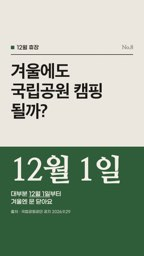

8번 영상
겨울에도 국립공원 캠핑 될까?
쿠팡 링크는 아직 준비 중이에요. 아래 비교는 지금 바로 읽을 수 있어요.
겨울 국립공원 3가지 확인
대부분 12월 1일부터 겨울엔 문 닫아요
국립공원공단 공지 2026.9.29
먼저 문 여는지 봐요
- 문 여는 곳 · 전기
- ✔ 1년 내내 여는 곳 찾기
- ⚠ 전기 한도는 곳마다 달라요
- 덕유대1은 11월 1일부터 휴장
- 산 들어가는 시간
- ✔ 겨울엔 길마다 시간 정해요
- ⚠ 막히는 시간 미리 봐요
- 아이젠 · 방한 장갑
- ✔ 공단이 챙기라고 해요
- ⚠ 아이젠 크기 · 장갑 여벌
- 아이젠 = 신발 미끄럼 방지 쇠
출처: 국립공원공단 공지(2026.9.29) · 공단 안내(2025.1)